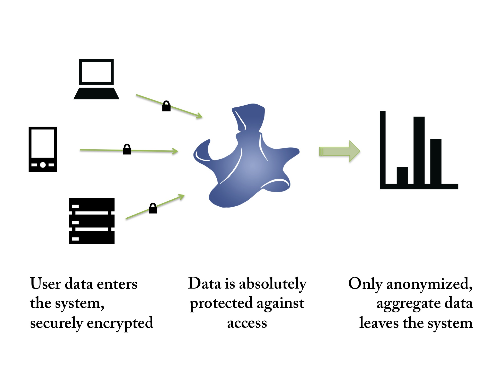

Better Privacy Enables Better Business Intelligence
Traditional solutions for protecting the privacy of user data in analytics systems are inadequate. "1st-Generation" anonymization techniques like K-anonymity or L-diversity either provide poor user protection, or destroy the value of the data itself. As a result, instead of anonymize, companies typically only "de-identify" user data, and then apply traditional data protection techniques like password-based or 2-factor access control, and VPNs. Leaks due to poor management of these systems are commonplace.
Concerns over privacy erode the quality of data analytics. For instance, data analysts know that more data means better analytics. This is why it is so important to move data from isolated information silos to centralized data warehouses. Unfortunately, privacy concerns can make data centralization expensive, risky, and often simply not possible.
In the health sector, for instance, millions have been spent trying to bring together clinical data from many sources for analysis by researchers, government, and practitioners, with only partial success. In finance, better fraud prevention could be enabled by combining data from multiple financial institutions. Fear of leaking individual user information, to the public or for that matter to each other, inhibits this sharing.
The same problem exists even within organizations. Multi-nationals for instance can find it hard to move user data across national boundaries, or even across divisions that question each others' ability to keep user data safe.
Concerns over privacy also increase costs and time-to-market where sensitive data is gathered. For instance, mobile carriers hold tremendously valuable user location data. In order to use this data for other business purposes, mobile carriers must go through lengthy approval processes, and may have to anonymize away much of that data.
Aircloak's analytics solutions solve these problems, lowering costs and time-to-market, and paving the way for new analytics opportunities through data sharing.
Concerns over privacy erode the quality of data analytics. For instance, data analysts know that more data means better analytics. This is why it is so important to move data from isolated information silos to centralized data warehouses. Unfortunately, privacy concerns can make data centralization expensive, risky, and often simply not possible.
In the health sector, for instance, millions have been spent trying to bring together clinical data from many sources for analysis by researchers, government, and practitioners, with only partial success. In finance, better fraud prevention could be enabled by combining data from multiple financial institutions. Fear of leaking individual user information, to the public or for that matter to each other, inhibits this sharing.
The same problem exists even within organizations. Multi-nationals for instance can find it hard to move user data across national boundaries, or even across divisions that question each others' ability to keep user data safe.
Concerns over privacy also increase costs and time-to-market where sensitive data is gathered. For instance, mobile carriers hold tremendously valuable user location data. In order to use this data for other business purposes, mobile carriers must go through lengthy approval processes, and may have to anonymize away much of that data.
Aircloak's analytics solutions solve these problems, lowering costs and time-to-market, and paving the way for new analytics opportunities through data sharing.

How are we different?
Aircloak's unique solution is based on a technology called Cloaked Computing being developed by researchers at the German Max Planck Institute for Software Systems. The three principles of Cloaked Computing are:
- Total user data protection grounded in Trusted Computing hardware
- Advanced anonymization of query answers
- Fully transparent and cryptographically-verified operation
You can think of Cloaked Computing as being like a voting booth. A voting booth takes user data, a vote, and generates the aggregate result without anyone knowing any individual's vote. The protection is total: even the people who set up the voting booth and count the votes cannot know any individual's vote. Likewise, with Cloaked Computing nobody, not even the people who program and operate the Aircloak servers, can ever see individual user data.
This approach is absolutely unique to Aircloak and provides unprecedented user protection.
Why would you trust Aircloak?
That's the beauty of it: you don't have to. Instead, you can verify.
Let's go back to the voting booth analogy on the left. How do you know your vote is secret? Because you are hidden in a booth, you know that nobody can see you casting the vote. You can see other people drop their vote into the ballot box, so you can be confident that your vote is mixed in with other votes. In short, you can inspect the setup.
Aircloak operates the computing equivalent of a voting booth. We make our server software publicly available for inspection. Furthermore, we provide cryptographic proof that we are operating the software we publish. This is made possible through secure cryptographic hardware called the Trusted Platform Module (TPM).
Nobody else provides Aircloak's level of transparency, or Aircloak's level of privacy.
With Aircloak, you get the business intelligence you need.
Users get the privacy protection they demand.
For more details, read our White Paper!